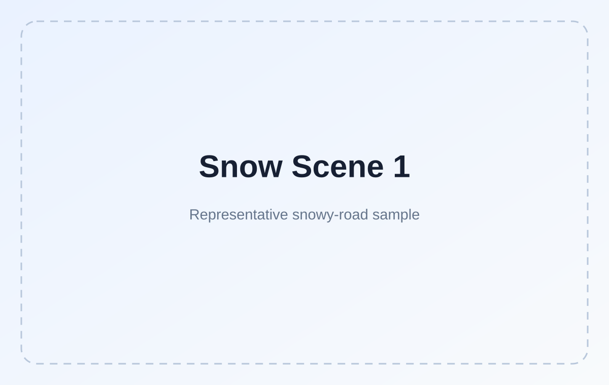
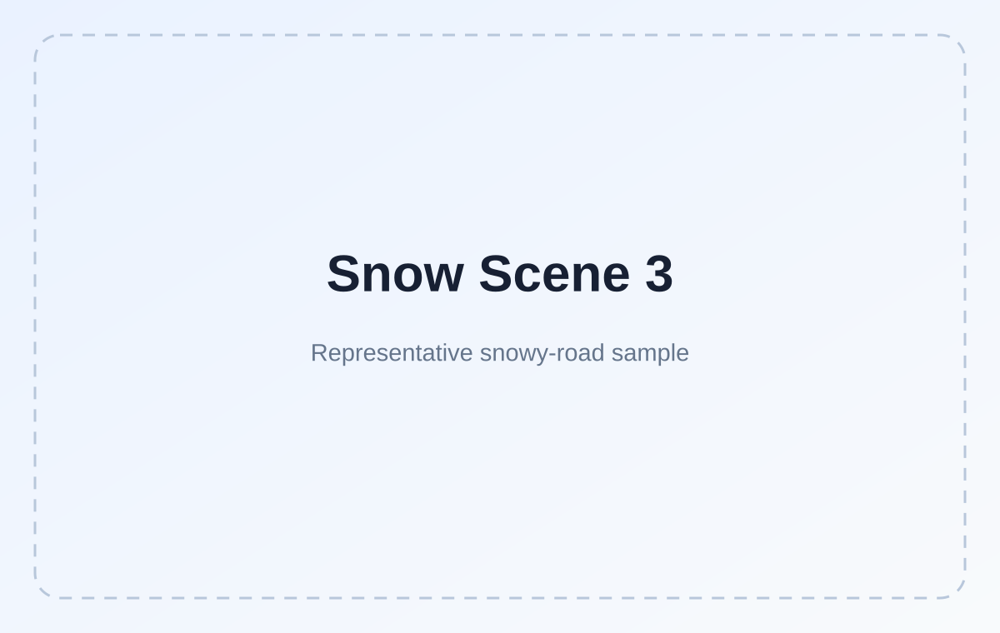
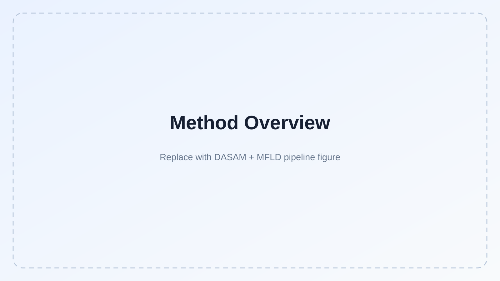

Normality
Reference non-snow driving conditions.
A Real-World Snowy-Road Lane-Detection Dataset and Framework
1Harbin Institute of Technology 2Affiliation
WinterLane focuses on lane perception under challenging winter driving conditions. The project introduces a real-world dashcam dataset with lane-instance annotations for snowy urban and campus roads, together with an angle-guided lane detection framework. This paragraph is intentionally concise for the demo page and can later be replaced by the final abstract from the paper.
Representative snowy scenes and challenging non-snow subsets for evaluating robustness in adverse winter driving environments.


Reference non-snow driving conditions.
Strong illumination and reflective road appearance.
Low-light scenes with reduced lane visibility.
Long weak-evidence intervals and degraded markings.
Angle-guided lane perception with complementary feature-level and prediction-level modeling.

Dynamic Angle-Aware Spatial Aggregation Module enhances feature aggregation by introducing angle-aware spatial relationships for challenging lane structures.
MFLD complements DASAM at the coordinate / prediction stage to improve lane localization under degraded visual evidence.
Visual comparison with representative lane-detection baselines across challenging scenes.
Compressed MP4 clips can be embedded directly in GitHub Pages.
@article{winterlane2026,
title = {WinterLane: ...},
author = {Chengzhe Jiao and Author Two and Author Three},
journal = {...},
year = {2026}
}Add funding information, institutional acknowledgements, and credits for third-party datasets or code here.